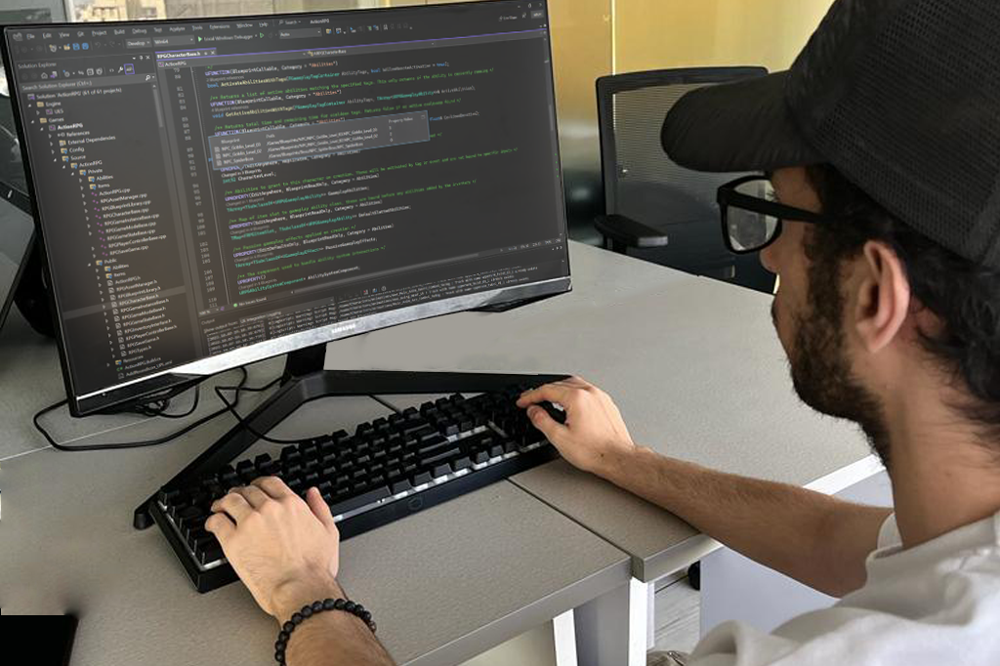
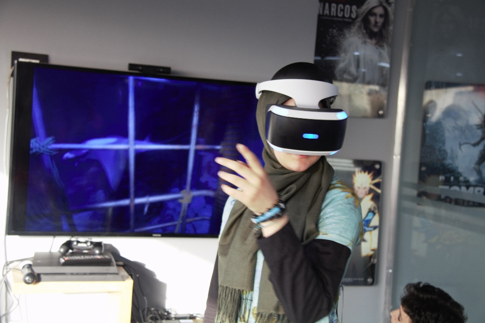
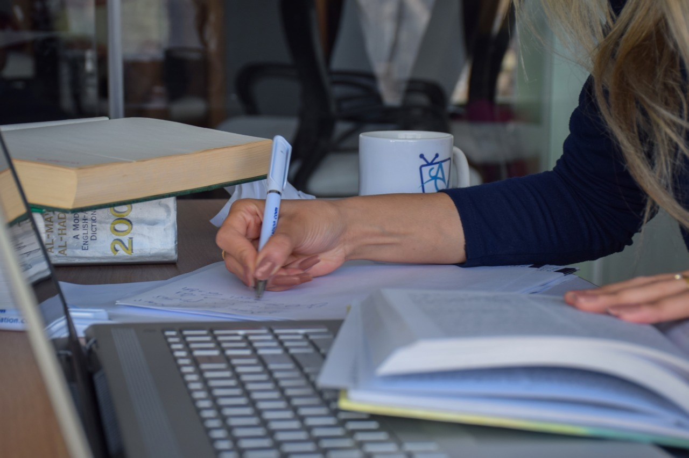
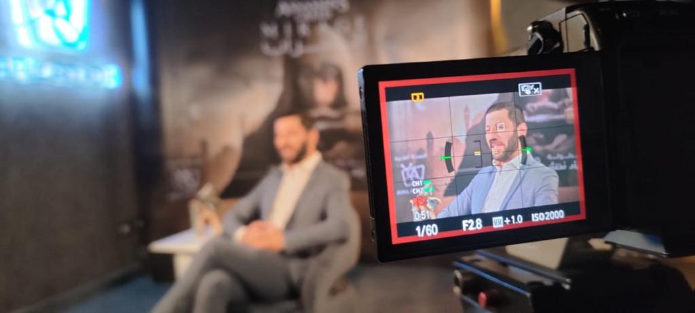
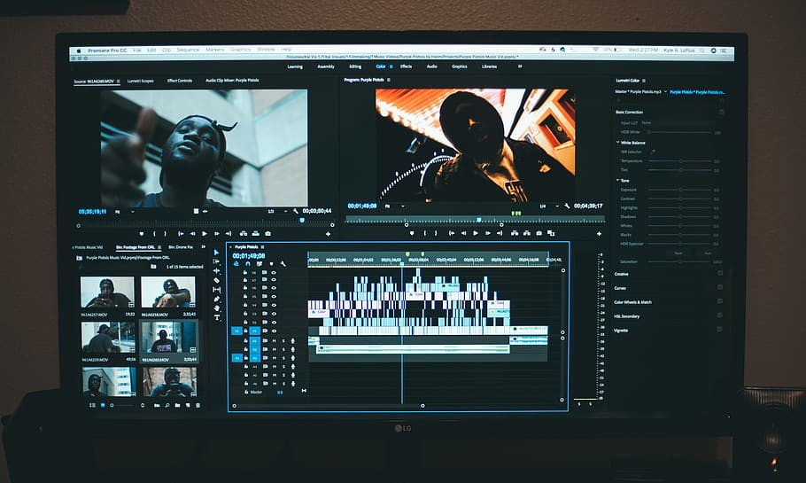
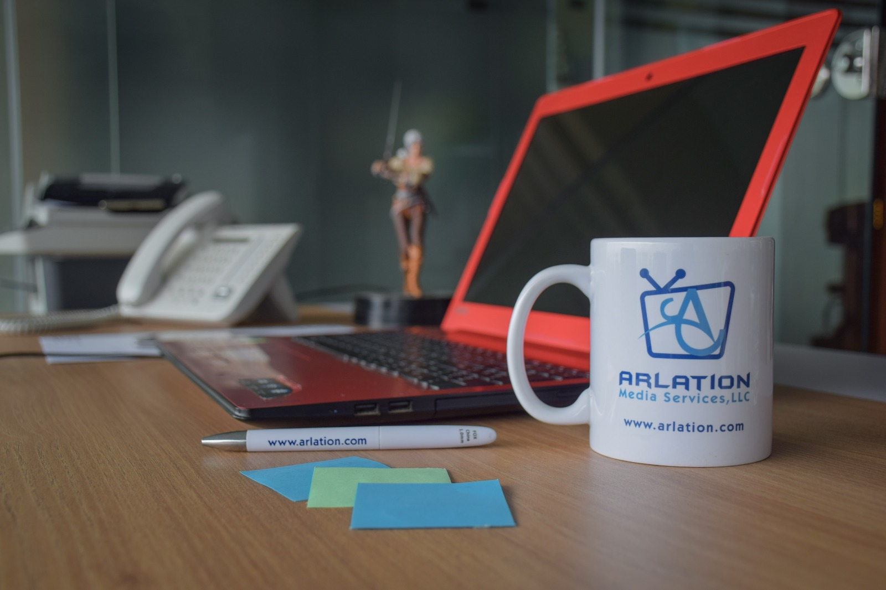
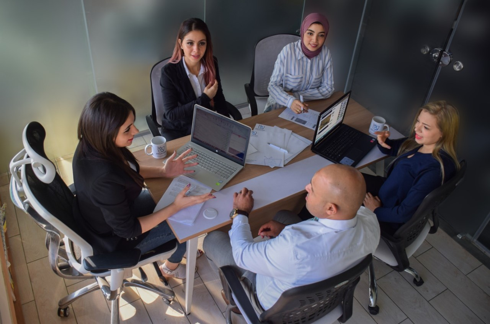

services
game lqa and lqe
- At Arlation, We take pride in being guardians of quality, not only at the last step, but throughout the localization process. This integral part of localization and translation is performed on three separate levels; linguistic testing, cosmetic testing and functionality testing, We did more than 3000 LQA hours for AAA titles such as Cyberpunk 2077 and Dying Light 2: Stay Human and many more.
- This entails consistency of terminology throughout the files, accuracy of translation, verification against glossaries and much more.
- This entails testing the software performance and verification that the localization process has not introduced any bugs to the game that may cause breaks or crashes. Our attentive and detail-oriented quality control and testing team is fully dedicated to producing a flawless enjoyable game to the end users .
- This entails consistency of terminology throughout the files, accuracy of translation, verification against glossaries and much more. Our Localization Quality Engineer department offers seamless software solutions to ensure Arabic content displays flawlessly within game engines, enhancing player experiences. Our team of software engineers optimize Arabic translations and user interfaces, guaranteeing an authentic gaming journey for Middle Eastern audiences.


game localization
- At Arlation, we believe that it is imperative to provide accurate, consistent, clear and fun translations that conform to the cultural norms and nuances of each local market, all while maintaining the soul of the game.
- This is Localization and this is our game.Adapting games with their content, graphics and sounds to different Arab cultures is a highly specialized task that requires mastering the language, understanding the culture, and familiarity with history.
- We offer our game localization to Middle Eastern and North African Arab Countries, taking heed of cultural nuances, terminology correctness, consistency and appropriateness, so that all gamers feel that games were developed in their mother tongue and in accordance to their culture.
.jpg)
arabic implemention
- We have helped many clients to publish their game in Arabic and we will be happy to help in Arabic implementation for your game either through font coding, design or UI orientation.

text translation
- The power of words cannot be undermined, in fact, and as Twain said, right words can change the world. It is this realization that drove us to cater to the needs of partners aiming at streamlining their content, reaching global markets and amplifying their profits.
- Our talented linguists are trained to apply and adhere to the best practices in translating English to Arabic and vice versa while upholding accuracy and rendering the meaning of the original text. Their skills are manifested through transforming the source text to the native desired language and remaining faithful to the original text.
- Stemming from our understanding of different industries and business fields, we have established partnerships with numerous clients spanning over many years with millions of words translated. With this capacity and portfolio, an accurate, smooth, cost effective and speedy translation, is guaranteed.

subtitling
- In a world where language is expected to cross borders, subtitling with precision while capturing the essence, humor and style of the original dialogue is imperative.
- At Arlation, a leading subtitling company operating in the Middle East, we have subtitled millions of words covering different topics of documentaries, comedies, action-packed films, time-honored classics, television series, horror shows as well as dramas and historical and educational programs.
- The up-to-date software and tools at Arlation allows for converting different types of files and formats, time captioning, with the highest technical and linguistic standards.
- Our list of partners includes some of the most internationally renowned and affluent terrestrial and extraterrestrial television stations as well as various production houses across the world.

dubbing
- At Arlation studios in Egypt and Jordan, the attention to detail and quality of work is unparalleled. The two language (Arabic/English) facilities focus on localizing a script's dialogue from one language into another, every time, on time and on budget.
- Our vast experience covers TV series and films dubbing, marketing videos and spots, video games, animations, documentaries, educational programs and much more. Our dedicated and creative talents make dubbing as easy and fun as a jingle, done fluently and accurately.
- The meticulous post production completed with the most advanced equipment and technology, and bullet-proof workflow allow you to capitalize on your profits, maximize your sales, reach your target audience around the world and boost your brand presence.

video editing
- A winning game is a combination of a compelling storyline, thrilling music, flashy animations and engaging language. If one of these components is missing, the game is just not the same. At Arlation, we believe that it is imperative to provide accurate, consistent, clear and fun translations that conform to the cultural norms and nuances of each local market, all while maintaining the soul of the game.
- This is Localization and this is our game. Adapting games with their content, graphics and sounds to different Arab cultures is a highly specialized task that requires mastering the language, understanding the culture, and familiarity with history.
- Ultimately , this reflects positively on your target audience in terms of brand acceptance and loyalty.

consultation
- Translation At Arlation, our motivation to achieve excellence in the novel industry of digital entertainment and gaming is transferred to our clients. We offer comprehensive consulting services on game translation and localization that make it possible for companies to focus on creating world-class games that could attract millions, engaging with their customers, and growing their sales.
- Our experience goes beyond that to include offering advice on commissioning translation, recruiting and training translators and talents, streamlining guidelines, processes and procedures, and administrative, legal and financial advice pertaining to the industry.
-
Television and Film Post-Production
As pioneers in the market, we offer consultation on the post production process. This encapsulates selection criteria for commissioning a subtitling and dubbing house, ground rules and concrete steps to establishing a subtitling and dubbing department, and the best equipment needed.

training
-
As a pioneer in localization, translation and subtitling,
The tailored one-on-one or group workshops are aimed to
improve and enhance skill sets in:
Game translation
Arabic - English Subtitling
English - Arabic Subtitling
Copywriting
- Our training moves beyond theory and presentation, giving you hands-on practical and technical knowledge and experience through customized development programs.

Arlation is a growing service provider in the industry of localization and language. We offer every one of our partners state-of-the-art visual and audio communication solutions


2023 © Arlation All rights reserved